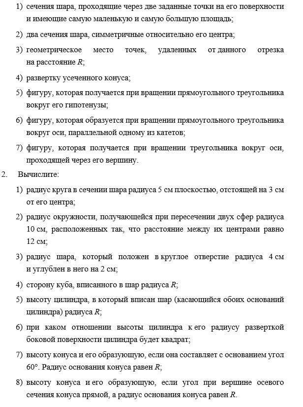

Шар — это множество точек пространства, расстояние которых до данной точки (центра шара) не превосходит данного числа (радиуса шара).
Границу шара называют сферой. Точки сферы удалены от центра на одно и то же расстояние, равное радиусу.
Сечения шара плоскостями — круги. Сечения шара плоскостями, проходящими через его центр, — круги, радиусы которых совпадают с радиусом шара.
Чем дальше отходит плоскость сечения от центра шара, тем меньше становится радиус окружности в сечении.
Если R — радиус шара; h — расстояние плоскости сечения от центра шара; r — радиус сечения, то
2. Цилиндр.
Прямой круговой цилиндр — тело, получаемое вращением прямоугольника вокруг одной из его сторон.
Сторона прямоугольника, вокруг которой производилось вращение, называется осью цилиндра. Стороны прямоугольника, примыкающие к оси, описывают при вращении два равных круга — основания цилиндра.
Радиус любого из этих кругов называется радиусом цилиндра. Он равен стороне вращающегося прямоугольника, перпендикулярной оси вращения.
Расстояние между основаниями цилиндра называется его высотой. Ясно, что высота равна длине той стороны прямоугольника, которая выбрана в качестве оси вращения.
Отрезок, параллельный оси цилиндра и соединяющий граничные точки его оснований, называется образующей цилиндра.
Сторона прямоугольника, параллельная оси, описывает боковую поверхность цилиндра.
Боковую поверхность цилиндра можно развернуть на плоскость. Эта развертка будет представлять собой прямоугольник, одна из сторон которого равна высоте цилиндра, а другая — длине окружности радиуса, равного радиусу цилиндра.
Сечения цилиндра плоскостями, параллельными основаниям, — круги, равные основаниям. Другие сечения имеют форму эллипса или его частей, если плоскость сечения наклонена к основаниям. Если плоскость сечения перпендикулярна основаниям, то в сечении получается прямоугольник. Сечение, проходящее через ось цилиндра, называется осевым сечением.
3. Конус.
Прямой круговой конус — тело, получаемое вращением прямоугольного треугольника вокруг одного из его катетов.
Пусть прямой круговой конус получен вращением треугольника ABC вокруг его катета BC (C — вершина прямого угла).
Прямая BC называется осью конуса; круг, получаемый вращением катета AC, — основанием конуса; точка B — вершиной конуса; любой отрезок, соединяющий вершину конуса с граничной точкой основания, — образующей конуса.
Высота конуса — это тот катет, вокруг которого производилось вращение прямоугольного треугольника, порождающего конус. Его длина равна расстоянию от вершины конуса до его основания.
В сечениях конуса плоскостями, параллельными основанию, образуются круги. Сечение конуса, проходящее через его ось, называется осевым сечением. Осевое сечение перпендикулярно основанию, так как проходит через ось, которая перпендикулярна основанию.
Другие сечения конусов представляют собой плоские фигуры, границы которых являются замечательными кривыми (или их частями).
Сечения конусов могут быть эллипсами, параболами, гиперболами. Как и в случае пирамиды, плоскость сечения, параллельного основанию, разбивает конус на две части — верхнюю, являющуюся конусом, подобным исходному, и нижнюю, называемую усеченным конусом.
Конус
Сечения конуса
ВОПРОСЫ И ЗАДАНИЯ
1. Нарисуйте
